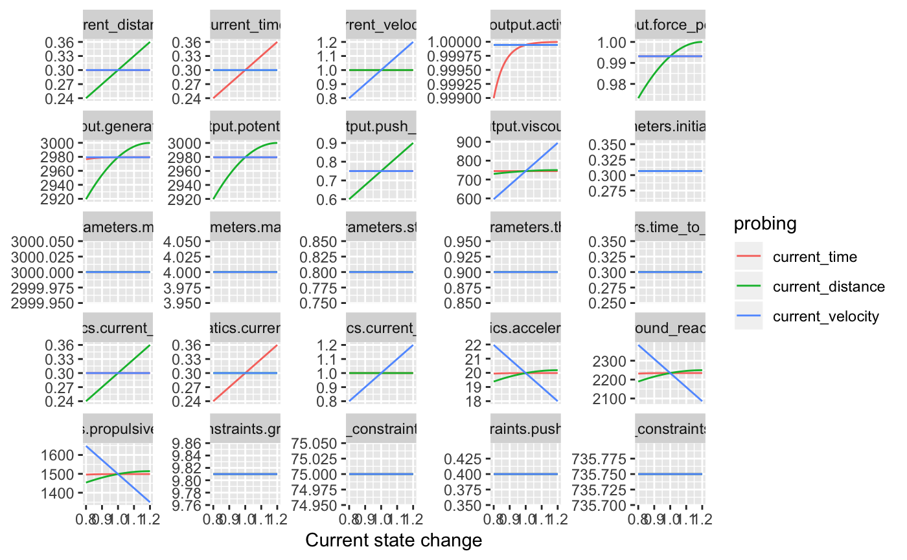

Probe Force Generator
probe_fgen( current_time = 0, current_distance = 0, current_velocity = 0, change_ratio = seq(0.8, 1.2, length.out = 100), aggregate = "raw", ... )
| current_time | Numeric value. Initial system state whose change is probed |
|---|---|
| current_distance | Numeric value. Initial system state whose change is probed |
| current_velocity | Numeric value. Initial system state whose change is probed |
| change_ratio | Numeric vector indicating probing change ratios |
| aggregate | How should |
| ... | Extra argument forwarded to |
Probing data frame
require(tidyverse)#>#>#> ✓ tibble 2.1.3 ✓ dplyr 0.8.3 #> ✓ tidyr 1.0.2 ✓ stringr 1.4.0 #> ✓ readr 1.3.1 ✓ forcats 0.4.0 #> ✓ purrr 0.3.3#> Conflicts ─────────────────────────────────────────────────────────────────────────────────────────────────── tidyverse_conflicts() ── #> x dplyr::filter() masks stats::filter() #> x dplyr::lag() masks stats::lag()fgen_probe_data <- probe_fgen( current_time = 0.3, current_distance = 0.3, current_velocity = 1 ) plot_data <- gather(fgen_probe_data, key = "variable", value = "value", -(1:2)) ggplot(plot_data, aes(x = change_ratio, y = value, color = probing)) + geom_line() + facet_wrap(~variable, scales = "free_y") + xlab("Current state change") + ylab(NULL)